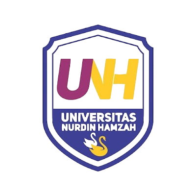

Universitas Nurdin Hamzah (UNH) diawali dengan keberadaan Akademi Manajemen Informatika dan Komputer (AMIK) Jambi pada tahun 1992. Alhamdullilah respon masyarakat Provinsi Jambi terhadap keberadaan AMIK Jambi sangat tinggi. Kemudian segenap civitas akademica bersama Yayasan Dewi Nurdin Hamzah merencanakan peningkatan status AMIK dari jenjang diploma tiga (D3) ketingkat Strata Satu (S1) menjadi Sekolah Tinggi dengan nama STMIK Nurdin Hamzah,perubahan D3 menjadi S1 alhamdullilah terealisasi pada tahun 1996. Respon masyarakat sangat positif terhadap STMIK Nurdin Hamzah, sekarang lulusannya sangat berkontribusi pada pemerintahan provinsi, kotamadya dan kabupaten-kabupaten yang ada di Provinsi Jambi, juga pada perusahaan BUMN dan BUMD, dan perusahaan swasta yang ada di provinsi Jambi, dan berwirausaha untuk lapangan pekerjaan
Pihak Yayasan juga mengembangkan Sekolah Tinggi dengan nama STISIP Nurdin Hamzah dengan dua program studi 1). Ilmu Pemerintahan (IK) dan 2). Ilmu Komunikasi (IK), keberadaan STISIP Nurdin Hamzah di lingkungan Pendidikan Tinggi Provinsi Jambi juga sangat direspon oleh masyarakat dengan baik
Keberadaan kedua institusi dibawah naungan Yayasan Dewi Nurdin Hamzah ini baik STMIK Nurdin Hamzah dan STISIP Nurdin Hamzah perlu peningkatan pengelolaan agar lebih efisien dan efektif dari sisi pengelolaan dan evaluasi dari pemerintah. Salah satu cara yang dapat dilakukan adalah dengan penggabungan kedua perguruan tinggi ini menjadi Universitas Nurdin Hamzah (UNH), pengabungan ini juga bertujuan untuk dapat lebih berperan dalam penyediaan pendidikan tinggi secara kompetitif di Provinsi Jambi. Dan juga merespon keinginan pemerintah dalam rangka konvergensi kemampuan PTS di Indonesia, hal ini diatur pada Permenristekdikti No.100 Tahun 2016 Tentang Pendirian, Perubahan, Pembubaran PTN, dan Pendirian, Perubahan, Pencabutan Izin PTS. Pandirian UNH Jambi didasarkan pada surat keputusan Yayasan No 006/BA/PPTS/YDNH/08/2019
Universitas Nurdin Hamzah sekarang terdiri dari dua Fakultas yaitu 1. Fakultas Ilmu Komputer (Filkom), dan 2. Fakultas Ilmu Sosial dan Ilmu Politik (Fisipol). Kedua fakultas ini menyelenggarakan pendidikan di Kampus UNH yang beralamat di Jl. Kol. Abunjani, Sipin-Jambi Telp. (0741) 668723, 668730 Fax. (0741) 668726
Fakultas Ilmu Komputer (Filkom) terdiri dari tiga Program Studi yaitu 1). Program Studi Sistem Informasi, 2). Program Teknik Informatika, 3). Program Studi Teknologi Informasi. Fakultas ini dipimpin oleh seorang dekan yang mempunyai kompetensi di bidang teknologi informasi. Ketiga Program Studi yang ada di Fakultas Ilmu Komputer juga dipimpin oleh Ketua Program Studi, dan sekretaris prodi yang mempunyai kompetensi dan memiliki kualifikasi, sesuai dengan kebutuhan sebagai seorang ketua Program Studi, dan sekretaris prodi. Dosen-dosen yang mengajar terdiri dari dosen tetap Yayasan dan dosen luar biasa yang memiliki kualifikasi pendidikan dan memiliki kompetensi pada setiap mata kuliah yang diampu. Operasional aktivitas perkuliah dari kedua Fakultas Filkom dan Fisipol dilakukan di Gedung A dan B Jl. Kolonel Abunjani Sipin.
Fakultas Ilmu Sosial dan Ilmu Politik (Fisipol) memiliki dua Program Studi yaitu 1). Program Studi Ilmu Pemerintahan, dan 2). Program Studi Ilmu Komunikasi. Fakultas ini dipimpin oleh seorang dekan, serta ketua Program Studi, dan sekretaris prodi yang mempunyai komptensi dibidangnya. Dosen-dosen yang mengajar di Fakultas ini merupakan dosen tetap dan dosen luar biasa dan memiliki pengalaman sebagai akademisi maupun praktisi dibidangnya.
Program Studi Teknik Informatika didirikan dengan Surat Keputusan Dirjen DIKTI no No. 908/D/T/2002 tertanggal 13 Mei 2002 dan telah dilakukan perpanjangan izin sesuai dengan surat dirjen dikti nomor 10741/D/T/K-X/2012 tertanggal 01 Maret 2012 Penyelengaraan pendidikan untuk mahasiswa baru pertama kali diadakan pada tahun akademik 2002/2003. Tujuannya adalah untuk menjawab dan memberikan pelayanan atas tuntutan masyarakat provinsi Jambi akan kebutuhan sarjana komputer bidang Teknik Informatika disamping itu untuk mendukung pelaksanaan pembangunan provinsi Jambi dan Nasional pada umumnya. Perumusan Visi, Misi, tujuan dan sasaran Program Studi S1 Teknik Informatika (Prodi SI) Universitas Nurdin Hamzah, disusun dengan mengacu pada Visi, Misi, Tujuan dan Sasaran Universitas Nurdin Hamzah yang tercantum di dalam Statuta Universitas Nurdin Hamzah dan Rencana Strategis Universitas Nurdin Hamzah.
APA ITU JURUSAN TEKNIK INFORMATIKA ?
Teknik Informatika merupakan bidang ilmu yang mempelajari teknologi komputer meliputi pengembangan, pengujian, evaluasi perangkat lunak (software), sistem operasi dan kerja komputer. Secara khusus, mahasiswa Teknik Informatika akan mempelajari fungsi-fungsi dan struktur instruksi dalam bahasa pemrograman untuk diaplikasikan pada komputer. Bahasa Pemrograman menggunakan algoritma dan coding sehingga membutuhkan ilmu dasar matematika dan logika yang kuat
Selain menerapkan teknologi yang sudah ada, mahasiswa Teknik Informatika juga dituntut untuk berfikir kreatif untuk mencipatakan ide baru pada sistem operasi komputer. Adapun matakuliah pada jurusan Teknik Informatika akan focus pada pemrograman, teknologi jaringan komputer dan pengembangan perangkat lunak. Matakuliah tersebut diantaranya adalah Logika Informatika, Algoritma dan Pemrograman, Rekayasa Perangkat Lunak, Artificial Intelligence dan Internet Of Things
VISI ?
Menjadi Program Studi Unggul di wilayah LLDikti Wil. X dan Kompetitif dalam Pengembangan Bidang Ilmu Informatika yang Berjiwa Kewirausahaan Berbasis Teknologi Pada Tahun 2024
MISI ?
TUJUAN
Mata Kuliah Semester 2